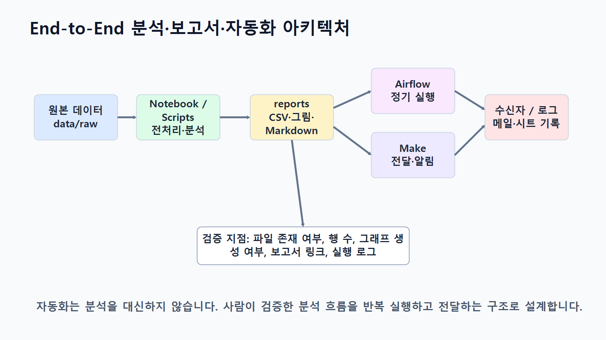

15장 기말 종합 프로젝트
이 장에서는 지금까지 학습한 전체 내용을 하나의 기말 종합 프로젝트로 완성합니다. Chapter 3부터 Chapter 14까지 데이터 불러오기, pandas 기본 분석, 전처리, EDA, 시각화, LLM 활용, 코드 생성과 검증, 인사이트 도출, 보고서 자동 작성, Make 자동화, Airflow 파이프라인을 단계별로 학습했습니다. 이번 장에서는 이 모든 과정을 하나의 실무형 분석 프로젝트로 통합합니다.
기말 종합 프로젝트의 목표는 단순히 코드 몇 개를 실행하는 것이 아닙니다. 실제 데이터 분석 업무처럼 분석 목적을 정의하고, 데이터 구조를 파악하고, 전처리 기준을 세우고, 분석 질문을 만들고, 결과를 시각화하고, LLM을 보조 도구로 활용하며, 최종 보고서와 자동화 설계까지 완성하는 것입니다.
이번 프로젝트에서는 온라인 쇼핑몰 데이터를 기반으로 매출 현황, 고객 구매 패턴, 상품 카테고리 성과, 월별 흐름을 분석합니다. 학습자는 Notebook, Python 스크립트, 분석 결과 CSV, 그래프 이미지, Markdown 보고서, LLM 활용 기록, 자동화 설계 문서를 함께 제출합니다.
이번 장의 핵심은 데이터 분석 전 과정을 실무 프로젝트 산출물로 완성하는 능력입니다.
수업 시간 구성
| 구성 | 권장 시간 |
|---|---|
| 기말 프로젝트 목표와 제출물 안내 | 40분 |
| 분석 주제와 질문 설계 | 50분 |
| 데이터 구조 점검 및 전처리 | 60분 |
| pandas 분석 및 지표 계산 | 70분 |
| 시각화 작성 및 저장 | 60분 |
| LLM 활용 및 검증 기록 작성 | 50분 |
| 인사이트 도출과 보고서 작성 | 70분 |
| 자동화 설계 또는 파이프라인 설계 | 50분 |
| 최종 검증 및 제출물 정리 | 60분 |
기본 수업은 약 5시간을 기준으로 구성되어 있습니다. 개인별 프로젝트 수행, 발표, 피드백까지 포함하면 1~2주 프로젝트로 확장할 수 있습니다.
1. 학습 목표
이 장을 마치면 학습자는 다음을 할 수 있습니다.
- 데이터 분석 프로젝트의 전체 흐름을 독립적으로 수행할 수 있습니다.
- 분석 목적과 분석 질문을 데이터 구조에 맞게 정의할 수 있습니다.
- 원본 데이터를 불러오고 구조, 결측치, 중복, 데이터 타입을 점검할 수 있습니다.
- 분석 목적에 맞는 전처리 기준을 수립하고 적용할 수 있습니다.
- 여러 CSV 파일을 병합해 분석용 데이터셋을 만들 수 있습니다.
- pandas를 사용해 카테고리별, 월별, 고객별, 상품별 주요 지표를 계산할 수 있습니다.
- 분석 질문에 적합한 그래프를 선택하고 저장할 수 있습니다.
- 분석 결과에서 관찰, 가설, 인사이트, 다음 단계를 구분할 수 있습니다.
- LLM을 활용해 코드, 해석, 보고서 초안을 보조받고 검증할 수 있습니다.
- Markdown 분석 보고서를 작성할 수 있습니다.
- Make 또는 Airflow 기반 자동화 설계를 제안할 수 있습니다.
- 최종 산출물을 체계적으로 정리해 제출할 수 있습니다.
2. 기말 프로젝트 개요
이번 기말 종합 프로젝트의 주제는 다음과 같습니다.
온라인 쇼핑몰 고객·상품·주문 데이터 기반 매출 분석 및 보고서 자동화 프로젝트
프로젝트의 기본 시나리오는 다음과 같습니다.
온라인 쇼핑몰 운영팀은 최근 주문 데이터를 바탕으로 매출 현황과 고객 구매 패턴을 파악하려고 합니다. 데이터 분석가는 원본 CSV 데이터를 점검하고, 전처리하고, 주요 지표를 계산하고, 시각화와 인사이트를 포함한 분석 보고서를 작성해야 합니다. 또한 향후 반복 분석 업무를 위해 보고서 자동화 또는 파이프라인 설계 방안을 제안해야 합니다.
이번 프로젝트에서 다룰 핵심 분석 영역은 다음과 같습니다.
| 분석 영역 | 핵심 질문 | 주요 지표 |
|---|---|---|
| 매출 현황 | 전체 매출은 어느 정도인가? | total_sales |
| 카테고리 분석 | 어떤 카테고리가 매출에 기여하는가? | sales_ratio, total_quantity |
| 월별 분석 | 매출과 주문 수는 월별로 어떻게 변하는가? | order_month, order_count |
| 고객 분석 | 구매 금액 상위 고객은 어떤 특성이 있는가? | order_count, avg_order_value |
| 상품 분석 | 어떤 상품이 매출과 판매 수량에 기여하는가? | total_quantity, total_sales |
| 주문 상태 분석 | 완료, 취소, 대기 주문은 어떻게 분포하는가? | order_status, order_count |
| 인사이트 | 다음에 어떤 분석이 필요한가? | 관찰, 가설, 추가 질문 |
아래 그림은 기말 종합 프로젝트의 전체 흐름을 보여줍니다.

3. 제출 산출물
기말 프로젝트 제출물은 코드, 데이터 결과, 그래프, 보고서, 검증 기록, 자동화 설계를 모두 포함합니다.
| 구분 | 제출물 | 설명 |
|---|---|---|
| Notebook | notebooks/ch15_final_project.ipynb |
전체 분석 과정 실행 Notebook |
| 전처리 결과 | data/processed/*_clean.csv |
전처리된 데이터 |
| 분석 결과 | reports/ch15_category_sales.csv |
카테고리별 매출 |
| 분석 결과 | reports/ch15_monthly_sales.csv |
월별 매출 |
| 분석 결과 | reports/ch15_customer_sales.csv |
고객별 구매 금액 |
| 분석 결과 | reports/ch15_product_sales.csv |
상품별 매출 |
| 그래프 | reports/figures/ch15_category_sales.png |
카테고리별 매출 그래프 |
| 그래프 | reports/figures/ch15_monthly_sales.png |
월별 매출 그래프 |
| 그래프 | reports/figures/ch15_top_customers.png |
상위 고객 그래프 |
| 보고서 | reports/ch15_final_report.md |
최종 분석 보고서 |
| LLM 기록 | reports/ch15_llm_usage_log.md |
LLM 활용 및 검증 기록 |
| 자동화 설계 | reports/ch15_automation_plan.md |
Make 또는 Airflow 자동화 설계 |
| 체크리스트 | reports/ch15_submission_checklist.csv |
최종 제출 점검표 |
아래 그림은 최종 제출 패키지 구성을 보여줍니다.

4. 핵심 개념
4.1 종합 프로젝트형 분석이란 무엇인가
종합 프로젝트형 분석은 개별 실습 코드를 하나로 묶는 수준을 넘어, 문제 정의부터 결과 보고까지 전체 분석 흐름을 완성하는 방식입니다.
프로젝트형 분석은 다음 순서로 진행됩니다.
- 분석 목적 정의
- 데이터 구조 확인
- 전처리 기준 수립
- 분석 질문 설계
- pandas 분석 수행
- 시각화 생성
- 인사이트 도출
- LLM 활용 및 검증
- 보고서 작성
- 자동화 또는 파이프라인 설계
- 최종 검증 및 제출
중요한 것은 각 단계가 서로 연결되어야 한다는 점입니다. 분석 질문 없이 그래프만 만들거나, 전처리 기준 없이 결과만 해석하면 프로젝트 완성도가 떨어집니다.
4.2 분석 질문과 산출물 연결
좋은 프로젝트는 분석 질문과 산출물이 명확하게 연결됩니다.
| 분석 질문 | 필요한 데이터 | pandas 기능 | 산출물 |
|---|---|---|---|
| 카테고리별 매출은 어떻게 다른가? | order_items, products |
merge(), groupby() |
표, 막대그래프 |
| 월별 매출은 어떻게 변하는가? | orders, order_items |
날짜 변환, groupby() |
표, 선 그래프 |
| 구매 금액 상위 고객은 누구인가? | customers, orders, order_items |
병합, 집계 | 표, 가로 막대그래프 |
| 상품별 판매 성과는 어떤가? | products, order_items |
병합, 집계, 정렬 | 상품별 매출표 |
| 주문 상태는 어떻게 분포하는가? | orders |
value_counts() |
주문 상태 요약표 |
| 자동화하려면 어떤 구조가 필요한가? | 보고서, 그래프 | Make 또는 Airflow 설계 | 자동화 설계서 |
4.3 프로젝트 품질을 결정하는 기준
기말 프로젝트의 품질은 코드 길이가 아니라 분석 흐름의 완성도로 평가합니다.
좋은 프로젝트는 다음 특징을 가집니다.
- 분석 목적이 명확합니다.
- 데이터 구조를 먼저 확인합니다.
- 전처리 기준이 설명되어 있습니다.
- 분석 질문과 코드가 연결됩니다.
- 표와 그래프가 해석과 연결됩니다.
- 원인 단정 없이 관찰과 가설을 구분합니다.
- LLM 활용 내용을 기록하고 검증합니다.
- 결과 파일과 보고서가 재현 가능합니다.
- 자동화 설계가 현실적인 업무 흐름과 연결됩니다.
아래 그림은 기말 프로젝트 평가 관점을 보여줍니다.

5. 프로젝트 수행 절차
5.1 프로젝트 폴더 구조
기말 프로젝트에서는 다음 폴더 구조를 사용합니다.
llm-data-analysis-course/
├─ data/
│ ├─ raw/
│ └─ processed/
├─ notebooks/
│ └─ ch15_final_project.ipynb
├─ reports/
│ ├─ figures/
│ ├─ ch15_final_report.md
│ ├─ ch15_llm_usage_log.md
│ └─ ch15_automation_plan.md
├─ scripts/
│ └─ ch15_final_project_pipeline.py
└─ prompts/
└─ ch15_project_prompts.md
5.2 기본 패키지 불러오기
from pathlib import Path
from datetime import datetime
import pandas as pd
import matplotlib.pyplot as plt
한글 폰트를 설정합니다.
plt.rcParams["font.family"] = "Malgun Gothic"
plt.rcParams["axes.unicode_minus"] = False
경로를 설정합니다.
raw_dir = Path("data/raw")
processed_dir = Path("data/processed")
report_dir = Path("reports")
figure_dir = report_dir / "figures"
processed_dir.mkdir(parents=True, exist_ok=True)
report_dir.mkdir(parents=True, exist_ok=True)
figure_dir.mkdir(parents=True, exist_ok=True)
Notebook을 notebooks 폴더 안에서 실행하는 경우에는 다음 경로를 사용합니다.
raw_dir = Path("../data/raw")
processed_dir = Path("../data/processed")
report_dir = Path("../reports")
figure_dir = report_dir / "figures"
processed_dir.mkdir(parents=True, exist_ok=True)
report_dir.mkdir(parents=True, exist_ok=True)
figure_dir.mkdir(parents=True, exist_ok=True)
5.3 원본 데이터 불러오기
customers = pd.read_csv(raw_dir / "customers.csv")
products = pd.read_csv(raw_dir / "products.csv")
orders = pd.read_csv(raw_dir / "orders.csv")
order_items = pd.read_csv(raw_dir / "order_items.csv")
데이터셋을 딕셔너리로 정리합니다.
datasets = {
"customers": customers,
"products": products,
"orders": orders,
"order_items": order_items
}
5.4 데이터 구조 요약표 만들기
dataset_summary = []
for name, df in datasets.items():
dataset_summary.append({
"dataset": name,
"rows": df.shape[0],
"columns": df.shape[1],
"column_list": ", ".join(df.columns),
"missing_values": int(df.isna().sum().sum()),
"duplicated_rows": int(df.duplicated().sum())
})
dataset_summary = pd.DataFrame(dataset_summary)
dataset_summary
저장합니다.
dataset_summary.to_csv(report_dir / "ch15_dataset_summary.csv", index=False)
5.5 전처리 함수 작성
문자열 공백 제거 함수입니다.
def strip_string_columns(df):
df = df.copy()
string_columns = df.select_dtypes(include="object").columns
for col in string_columns:
df[col] = df[col].where(
df[col].isna(),
df[col].astype(str).str.strip()
)
return df
숫자형 변환 함수입니다.
def to_number(series):
return pd.to_numeric(
series.astype(str).str.replace(",", "", regex=False),
errors="coerce"
)
5.6 데이터 전처리 수행
고객 데이터 전처리입니다.
customers_clean = strip_string_columns(customers)
if "age" in customers_clean.columns:
customers_clean["age"] = pd.to_numeric(customers_clean["age"], errors="coerce")
customers_clean["age"] = customers_clean["age"].fillna(customers_clean["age"].median())
if "city" in customers_clean.columns:
customers_clean["city"] = customers_clean["city"].fillna("Unknown")
if "signup_date" in customers_clean.columns:
customers_clean["signup_date"] = pd.to_datetime(
customers_clean["signup_date"],
errors="coerce"
)
customers_clean = customers_clean.drop_duplicates()
상품 데이터 전처리입니다.
products_clean = strip_string_columns(products)
if "price" in products_clean.columns:
products_clean["price"] = to_number(products_clean["price"])
products_clean = products_clean[products_clean["price"] > 0]
products_clean = products_clean.drop_duplicates()
주문 데이터 전처리입니다.
orders_clean = strip_string_columns(orders)
if "order_date" in orders_clean.columns:
orders_clean["order_date"] = pd.to_datetime(
orders_clean["order_date"],
errors="coerce"
)
orders_clean["order_month"] = orders_clean["order_date"].dt.to_period("M").astype(str)
if "order_status" in orders_clean.columns:
status_map = {
"complete": "completed",
"Complete": "completed",
"COMPLETED": "completed",
"완료": "completed",
"cancel": "cancelled",
"Cancel": "cancelled",
"CANCELLED": "cancelled",
"취소": "cancelled"
}
orders_clean["order_status"] = orders_clean["order_status"].replace(status_map)
orders_clean = orders_clean.drop_duplicates()
주문 상세 데이터 전처리입니다.
order_items_clean = strip_string_columns(order_items)
if "quantity" in order_items_clean.columns:
order_items_clean["quantity"] = to_number(order_items_clean["quantity"])
if "unit_price" in order_items_clean.columns:
order_items_clean["unit_price"] = to_number(order_items_clean["unit_price"])
if "quantity" in order_items_clean.columns:
order_items_clean = order_items_clean[order_items_clean["quantity"] > 0]
if "unit_price" in order_items_clean.columns:
order_items_clean = order_items_clean[order_items_clean["unit_price"] > 0]
if {"quantity", "unit_price"}.issubset(order_items_clean.columns):
order_items_clean["line_total"] = (
order_items_clean["quantity"] * order_items_clean["unit_price"]
)
order_items_clean = order_items_clean.drop_duplicates()
전처리 결과를 저장합니다.
customers_clean.to_csv(processed_dir / "customers_clean.csv", index=False)
products_clean.to_csv(processed_dir / "products_clean.csv", index=False)
orders_clean.to_csv(processed_dir / "orders_clean.csv", index=False)
order_items_clean.to_csv(processed_dir / "order_items_clean.csv", index=False)
5.7 전처리 전후 비교
processed_summary = pd.DataFrame({
"dataset": ["customers", "products", "orders", "order_items"],
"rows_processed": [
customers_clean.shape[0],
products_clean.shape[0],
orders_clean.shape[0],
order_items_clean.shape[0]
],
"columns_processed": [
customers_clean.shape[1],
products_clean.shape[1],
orders_clean.shape[1],
order_items_clean.shape[1]
]
})
preprocessing_comparison = dataset_summary.merge(
processed_summary,
on="dataset"
)
preprocessing_comparison
저장합니다.
preprocessing_comparison.to_csv(
report_dir / "ch15_preprocessing_comparison.csv",
index=False
)
5.8 분석용 데이터 병합
주문 상세와 상품 데이터를 병합합니다.
sales_items = order_items_clean.merge(
products_clean,
on="product_id",
how="left"
)
주문 상세와 주문 데이터를 병합합니다.
order_sales = order_items_clean.merge(
orders_clean,
on="order_id",
how="left"
)
고객 정보까지 병합합니다.
customer_sales_base = order_sales.merge(
customers_clean,
on="customer_id",
how="left"
)
병합 결과를 검증합니다.
print("sales_items:", sales_items.shape)
print("order_sales:", order_sales.shape)
print("customer_sales_base:", customer_sales_base.shape)
print("category 누락:", sales_items["category"].isna().sum())
print("order_date 누락:", order_sales["order_date"].isna().sum())
print("customer_id 누락:", customer_sales_base["customer_id"].isna().sum())
6. 주요 분석
6.1 카테고리별 매출 분석
category_sales = (
sales_items
.groupby("category", as_index=False)
.agg(
total_quantity=("quantity", "sum"),
total_sales=("line_total", "sum")
)
.sort_values("total_sales", ascending=False)
)
category_sales["sales_ratio"] = (
category_sales["total_sales"] / category_sales["total_sales"].sum() * 100
).round(2)
category_sales["avg_unit_revenue"] = (
category_sales["total_sales"] / category_sales["total_quantity"]
).round(0)
category_sales
저장합니다.
category_sales.to_csv(report_dir / "ch15_category_sales.csv", index=False)
6.2 월별 매출 분석
order_sales["order_date"] = pd.to_datetime(order_sales["order_date"], errors="coerce")
order_sales["order_month"] = order_sales["order_date"].dt.to_period("M").astype(str)
monthly_sales = (
order_sales
.groupby("order_month", as_index=False)
.agg(
total_sales=("line_total", "sum"),
order_count=("order_id", "nunique")
)
.sort_values("order_month")
)
monthly_sales["avg_order_value"] = (
monthly_sales["total_sales"] / monthly_sales["order_count"]
).round(0)
monthly_sales["sales_change_ratio"] = (
monthly_sales["total_sales"].pct_change() * 100
).round(2)
monthly_sales
저장합니다.
monthly_sales.to_csv(report_dir / "ch15_monthly_sales.csv", index=False)
6.3 고객별 구매 금액 분석
customer_sales = (
customer_sales_base
.groupby(["customer_id", "city"], as_index=False)
.agg(
order_count=("order_id", "nunique"),
total_sales=("line_total", "sum")
)
.sort_values("total_sales", ascending=False)
)
customer_sales["avg_order_value"] = (
customer_sales["total_sales"] / customer_sales["order_count"]
).round(0)
customer_sales["customer_label"] = "Customer " + customer_sales["customer_id"].astype(str)
customer_sales.head(10)
저장합니다.
customer_sales.to_csv(report_dir / "ch15_customer_sales.csv", index=False)
6.4 상품별 매출 분석
product_sales = (
sales_items
.groupby(["product_id", "product_name", "category", "price"], as_index=False)
.agg(
total_quantity=("quantity", "sum"),
total_sales=("line_total", "sum")
)
.sort_values("total_sales", ascending=False)
)
product_sales["avg_unit_revenue"] = (
product_sales["total_sales"] / product_sales["total_quantity"]
).round(0)
product_sales.head(10)
저장합니다.
product_sales.to_csv(report_dir / "ch15_product_sales.csv", index=False)
6.5 주문 상태별 주문 수 분석
order_status_summary = (
orders_clean["order_status"]
.value_counts()
.reset_index()
)
order_status_summary.columns = ["order_status", "order_count"]
order_status_summary
저장합니다.
order_status_summary.to_csv(
report_dir / "ch15_order_status_summary.csv",
index=False
)
7. 시각화
7.1 카테고리별 매출 그래프
plt.figure(figsize=(10, 5))
plt.bar(
category_sales["category"],
category_sales["total_sales"]
)
plt.title("카테고리별 매출")
plt.xlabel("카테고리")
plt.ylabel("총매출")
plt.xticks(rotation=45)
plt.tight_layout()
plt.savefig(figure_dir / "ch15_category_sales.png", dpi=150)
plt.show()
7.2 월별 매출 그래프
plt.figure(figsize=(10, 5))
plt.plot(
monthly_sales["order_month"],
monthly_sales["total_sales"],
marker="o"
)
plt.title("월별 매출 추이")
plt.xlabel("주문 월")
plt.ylabel("총매출")
plt.xticks(rotation=45)
plt.tight_layout()
plt.savefig(figure_dir / "ch15_monthly_sales.png", dpi=150)
plt.show()
7.3 구매 금액 상위 고객 그래프
top_customers = customer_sales.head(10).copy()
top_customers = top_customers.sort_values("total_sales")
plt.figure(figsize=(10, 6))
plt.barh(
top_customers["customer_label"],
top_customers["total_sales"]
)
plt.title("구매 금액 상위 10명 고객")
plt.xlabel("총 구매 금액")
plt.ylabel("고객")
plt.tight_layout()
plt.savefig(figure_dir / "ch15_top_customers.png", dpi=150)
plt.show()
7.4 상품 가격과 판매 수량 산점도
plt.figure(figsize=(10, 5))
plt.scatter(
product_sales["price"],
product_sales["total_quantity"],
alpha=0.6
)
plt.title("상품 가격과 판매 수량의 관계")
plt.xlabel("상품 가격")
plt.ylabel("총 판매 수량")
plt.tight_layout()
plt.savefig(figure_dir / "ch15_price_quantity_scatter.png", dpi=150)
plt.show()
아래 그림은 기말 프로젝트에서 생성할 주요 시각화 결과를 보여줍니다.

8. 인사이트 도출
8.1 핵심 결과 추출
top_category = category_sales.iloc[0]
top_month = monthly_sales.sort_values("total_sales", ascending=False).iloc[0]
top_customer = customer_sales.iloc[0]
top_product = product_sales.iloc[0]
8.2 인사이트 카드 작성
insight_cards = pd.DataFrame({
"insight_title": [
"매출 기여도 높은 카테고리 확인",
"월별 매출 집중 구간 확인",
"구매 금액 상위 고객 특성 확인",
"상품별 매출 기여도 확인"
],
"analysis_question": [
"카테고리별 매출은 어떻게 다른가?",
"월별 매출은 어떻게 변하는가?",
"구매 금액 상위 고객은 누구인가?",
"상품별 매출 성과는 어떻게 다른가?"
],
"observation": [
f"{top_category['category']} 카테고리의 매출 비중이 가장 높게 나타났습니다.",
f"{top_month['order_month']}의 매출이 가장 높게 나타났습니다.",
"구매 금액 상위 고객은 전체 매출에 크게 기여하는 고객군입니다.",
f"{top_product['product_name']} 상품의 매출이 가장 높게 나타났습니다."
],
"caution": [
"매출이 높은 이유를 고객 선호로 단정할 수 없습니다.",
"매출 증가 원인을 프로모션이나 계절성으로 단정할 수 없습니다.",
"총 구매 금액만으로 충성 고객 여부를 판단할 수 없습니다.",
"상품 매출이 높은 이유는 단가 또는 판매 수량을 함께 확인해야 합니다."
],
"next_step": [
"판매 수량과 평균 판매 단가를 함께 분석합니다.",
"주문 수와 평균 주문 금액 변화를 함께 확인합니다.",
"반복 구매 여부와 최근 구매일을 추가로 확인합니다.",
"상품별 판매 수량과 가격대를 함께 분석합니다."
]
})
insight_cards
저장합니다.
insight_cards.to_csv(report_dir / "ch15_insight_cards.csv", index=False)
9. LLM 활용 및 검증 기록
LLM은 이번 프로젝트에서 다음 작업에 활용할 수 있습니다.
| 활용 영역 | 예시 |
|---|---|
| 분석 질문 보완 | 현재 데이터로 가능한 질문 추천 |
| pandas 코드 초안 | 병합, 집계, 시각화 코드 작성 보조 |
| 오류 해결 | 에러 메시지 원인 설명 요청 |
| 결과 해석 | 표와 그래프에서 볼 수 있는 관찰 정리 |
| 보고서 초안 | Markdown 보고서 구조 작성 |
| 자동화 설계 | Make 또는 Airflow 흐름 초안 작성 |
9.1 LLM 활용 원칙
LLM을 사용할 때는 다음 원칙을 지켜야 합니다.
- LLM이 만든 코드를 그대로 제출하지 않습니다.
- 코드 실행 결과를 직접 확인합니다.
- 컬럼명이 실제 데이터와 일치하는지 검증합니다.
- 분석 결과를 원본 데이터와 비교합니다.
- 인사이트는 관찰과 가설을 구분해 작성합니다.
- LLM에게 질문한 내용과 수정한 내용을 기록합니다.
9.2 LLM 활용 기록 양식
llm_usage_log = pd.DataFrame({
"step": [
"분석 질문 설계",
"pandas 코드 작성",
"오류 수정",
"결과 해석",
"보고서 작성"
],
"prompt_summary": [
"온라인 쇼핑몰 데이터로 가능한 분석 질문 요청",
"카테고리별 매출 groupby 코드 요청",
"merge 이후 결측치 발생 원인 질문",
"월별 매출 그래프 해석 요청",
"최종 보고서 구조 초안 요청"
],
"llm_output_used": [
"일부 사용",
"수정 후 사용",
"설명 참고",
"수정 후 사용",
"구조만 참고"
],
"verification": [
"데이터 컬럼과 비교 후 질문 수정",
"실제 컬럼명에 맞게 코드 수정",
"병합 키와 누락 값을 직접 확인",
"그래프와 원본 집계표 비교",
"분석 결과 수치 직접 삽입"
]
})
llm_usage_log.to_csv(report_dir / "ch15_llm_usage_log.md", index=False)
llm_usage_log
9.3 권장 프롬프트
분석 질문 설계 프롬프트입니다.
온라인 쇼핑몰 주문 데이터가 있습니다.
데이터셋은 customers, products, orders, order_items 네 개입니다.
기말 프로젝트 보고서에 적합한 분석 질문 6개를 추천해 주세요.
각 질문마다 필요한 데이터셋, pandas 분석 방법, 예상 산출물을 함께 정리해 주세요.
코드 검증 프롬프트입니다.
아래 pandas 코드가 온라인 쇼핑몰 매출 분석 목적에 맞는지 검토해 주세요.
특히 merge 기준, groupby 기준, 결측치 발생 가능성, 결과 해석 시 주의점을 중심으로 봐 주세요.
[코드 붙여넣기]
인사이트 작성 프롬프트입니다.
아래 분석 결과표를 바탕으로 보고서용 인사이트를 작성해 주세요.
단, 원인을 단정하지 말고 관찰, 가능한 가설, 추가 확인이 필요한 사항으로 구분해 주세요.
[분석 결과표 붙여넣기]
10. 보고서 작성
최종 보고서는 분석 결과를 설명하는 핵심 산출물입니다. 단순히 그래프를 붙이는 것이 아니라 분석 질문, 방법, 결과, 해석, 한계, 다음 단계를 포함해야 합니다.
10.1 보고서 기본 구조
# 기말 프로젝트 최종 보고서
## 1. 프로젝트 개요
- 분석 주제
- 분석 목적
- 사용 데이터
## 2. 데이터 이해
- 데이터셋 목록
- 주요 컬럼
- 데이터 품질 이슈
## 3. 전처리 과정
- 결측치 처리
- 중복 제거
- 타입 변환
- 파생 변수 생성
## 4. 주요 분석 결과
- 카테고리별 매출
- 월별 매출
- 고객별 구매 금액
- 상품별 매출
- 주문 상태별 주문 수
## 5. 시각화 결과
- 그래프별 설명
- 그래프에서 확인한 관찰
## 6. 핵심 인사이트
- 관찰
- 가능한 가설
- 추가 분석 필요 사항
## 7. LLM 활용 및 검증
- 활용한 작업
- 수정한 부분
- 검증 방법
## 8. 자동화 설계
- Make 또는 Airflow 활용 방안
- 자동화 흐름
- 기대 효과
## 9. 한계와 개선 방향
- 데이터 한계
- 분석 한계
- 다음 분석 제안
10.2 Markdown 보고서 자동 생성 예시
final_report = f"""
# 기말 프로젝트 최종 보고서
## 1. 프로젝트 개요
이번 프로젝트는 온라인 쇼핑몰 고객, 상품, 주문 데이터를 활용해 매출 현황과 고객 구매 패턴을 분석하는 것을 목표로 합니다.
## 2. 주요 분석 결과
### 2.1 카테고리별 매출
가장 높은 매출을 기록한 카테고리는 **{top_category['category']}**입니다.
해당 카테고리의 매출 비중은 **{top_category['sales_ratio']}%**입니다.
### 2.2 월별 매출
가장 높은 매출을 기록한 월은 **{top_month['order_month']}**입니다.
해당 월의 총매출은 **{top_month['total_sales']:,.0f}원**입니다.
### 2.3 고객별 구매 금액
구매 금액이 가장 높은 고객은 **{top_customer['customer_label']}**입니다.
해당 고객의 총 구매 금액은 **{top_customer['total_sales']:,.0f}원**입니다.
### 2.4 상품별 매출
가장 높은 매출을 기록한 상품은 **{top_product['product_name']}**입니다.
해당 상품의 총매출은 **{top_product['total_sales']:,.0f}원**입니다.
## 3. 핵심 인사이트
- 특정 카테고리와 상품이 전체 매출에 큰 영향을 미치는 것으로 관찰됩니다.
- 월별 매출 편차가 존재하므로 프로모션, 시즌성, 이벤트 여부를 추가로 확인할 필요가 있습니다.
- 구매 금액 상위 고객군은 CRM 또는 재구매 분석 대상으로 활용할 수 있습니다.
- 주문 상태 분포를 함께 확인해 취소 주문이 매출 분석에 미치는 영향을 점검해야 합니다.
## 4. LLM 활용 및 검증
LLM은 분석 질문 보완, pandas 코드 초안 작성, 보고서 구조 설계에 활용했습니다.
단, 실제 컬럼명, 집계 결과, 그래프 해석은 직접 검증했습니다.
## 5. 자동화 설계
향후에는 Python 스크립트로 분석 결과와 보고서를 생성하고, Make 또는 Airflow를 사용해 반복 실행할 수 있습니다.
Make는 보고서 발송과 Google Sheets 로그 기록에 적합하고, Airflow는 정기 실행과 Task 의존성 관리에 적합합니다.
## 6. 한계와 개선 방향
- 현재 데이터만으로 매출 변동 원인을 단정할 수 없습니다.
- 프로모션, 유입 채널, 광고비, 재고 데이터가 추가되면 더 정밀한 분석이 가능합니다.
- 고객 세그먼트와 반복 구매 분석을 추가하면 실무 활용도가 높아집니다.
- 자동화 파이프라인을 실제 운영 환경에 맞게 개선합니다.
"""
final_report_path = report_dir / "ch15_final_report.md"
final_report_path.write_text(final_report, encoding="utf-8")
11. 자동화 설계
기말 프로젝트에서는 Make 또는 Airflow 중 하나를 선택해 자동화 설계를 작성합니다. 둘 다 작성하면 가산점 요소로 활용할 수 있습니다.
11.1 Make 기반 자동화 설계 예시
| 단계 | 도구 | 역할 |
|---|---|---|
| 1 | Python | 분석 보고서 생성 |
| 2 | Google Drive | 보고서 저장 |
| 3 | Make | 새 보고서 파일 감지 |
| 4 | Gmail | 담당자에게 보고서 발송 |
| 5 | Google Sheets | 실행 로그 기록 |
11.2 Airflow 기반 파이프라인 설계 예시
| Task | 역할 |
|---|---|
check_input_files |
원본 CSV 확인 |
run_preprocessing |
전처리 실행 |
run_analysis |
분석 결과 생성 |
generate_visualizations |
그래프 생성 |
generate_report |
Markdown 보고서 생성 |
validate_outputs |
제출물 생성 여부 확인 |
11.3 자동화 설계서에 포함할 내용
- 자동화 목적
- 입력 데이터
- 실행 주기
- 처리 단계
- 생성 산출물
- 실패 시 대응 방식
- 보고서 발송 방식
- 로그 기록 방식
아래 그림은 Airflow와 Make를 함께 활용한 End-to-End 자동화 구조를 보여줍니다.

12. 평가 기준
기말 프로젝트 평가는 다음 기준으로 진행합니다.
| 평가 항목 | 배점 | 확인 내용 |
|---|---|---|
| 프로젝트 구조와 제출물 | 15점 | 폴더 구조, 파일명, 제출물 누락 여부 |
| 데이터 이해와 전처리 | 15점 | 데이터 구조 점검, 결측치, 중복, 타입 처리 |
| pandas 분석 | 20점 | 병합, 집계, 정렬, 파생 변수 생성 |
| 시각화 | 15점 | 그래프 선택, 제목, 축, 저장 여부 |
| 해석과 인사이트 | 15점 | 관찰, 가설, 주의점, 다음 단계 구분 |
| LLM 활용과 검증 | 10점 | 활용 기록, 코드 검증, 결과 확인 |
| 보고서 완성도 | 5점 | Markdown 보고서 구성과 가독성 |
| 자동화 설계 | 5점 | Make 또는 Airflow 설계의 현실성 |
13. 최종 제출 체크리스트
제출 전 다음 항목을 확인합니다.
| check_item | required | status |
|---|---|---|
| Notebook 실행 완료 | Y | |
| 전처리 CSV 저장 | Y | |
| 분석 결과 CSV 저장 | Y | |
| 그래프 이미지 저장 | Y | |
| 최종 보고서 작성 | Y | |
| LLM 활용 기록 작성 | Y | |
| 자동화 설계서 작성 | Y | |
| 파일명 규칙 확인 | Y | |
| 코드 재실행 가능 여부 확인 | Y | |
| 제출 압축 파일 생성 | Y |
CSV로 저장하는 예시는 다음과 같습니다.
submission_checklist = pd.DataFrame({
"check_item": [
"Notebook 실행 완료",
"전처리 CSV 저장",
"분석 결과 CSV 저장",
"그래프 이미지 저장",
"최종 보고서 작성",
"LLM 활용 기록 작성",
"자동화 설계서 작성",
"파일명 규칙 확인",
"코드 재실행 가능 여부 확인",
"제출 압축 파일 생성"
],
"required": ["Y"] * 10,
"status": [""] * 10
})
submission_checklist.to_csv(
report_dir / "ch15_submission_checklist.csv",
index=False
)
submission_checklist
14. 연습 문제
- 카테고리별 매출 분석 결과에서 매출 비중이 가장 높은 카테고리를 찾고, 그 이유를 단정하지 않는 방식으로 해석해 보세요.
- 월별 매출 분석 결과에서 가장 높은 매출을 기록한 월을 찾고, 추가로 확인해야 할 외부 요인을 3가지 적어 보세요.
- 구매 금액 상위 고객 분석 결과를 활용해 고객 세그먼트를 나누려면 어떤 추가 지표가 필요할까요?
- LLM이 작성한 pandas 코드에서 반드시 검증해야 하는 항목을 5가지 적어 보세요.
- Make 자동화와 Airflow 파이프라인 중 이번 프로젝트에 더 적합한 방식을 선택하고 이유를 설명해 보세요.
- 최종 보고서에서 관찰, 가설, 추가 분석을 구분해 작성해야 하는 이유를 설명해 보세요.
15. 정리
이번 장에서는 데이터 분석 전 과정을 하나의 기말 종합 프로젝트로 통합했습니다. 데이터 불러오기, 구조 점검, 전처리, pandas 분석, 시각화, LLM 활용, 인사이트 도출, 보고서 작성, 자동화 설계까지 전체 흐름을 하나의 산출물로 완성했습니다.
실무 데이터 분석에서는 코드를 실행하는 능력만큼이나 문제를 정의하고, 결과를 검증하고, 해석을 보고서로 전달하는 능력이 중요합니다. 또한 반복되는 분석 업무는 Make 또는 Airflow와 같은 도구를 활용해 자동화할 수 있습니다.
기말 프로젝트는 지금까지 배운 내용을 정리하는 동시에, 실제 업무에서 활용 가능한 포트폴리오형 산출물을 만드는 과정입니다.